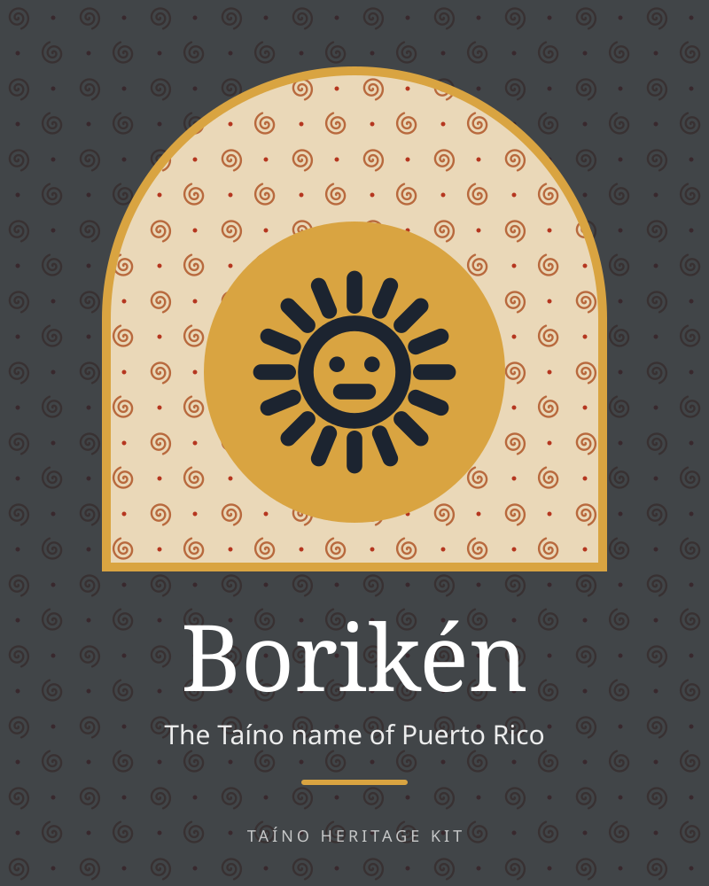
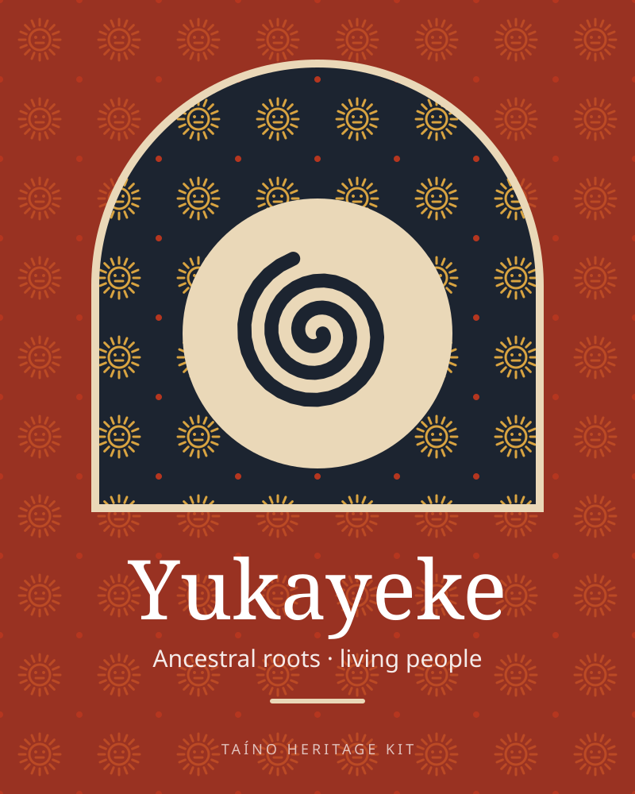
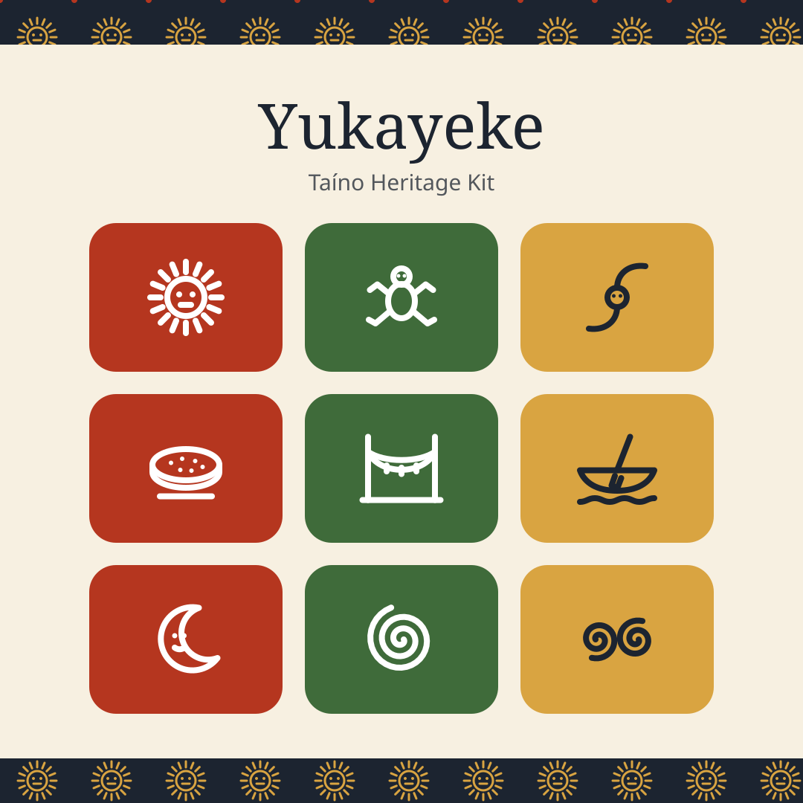
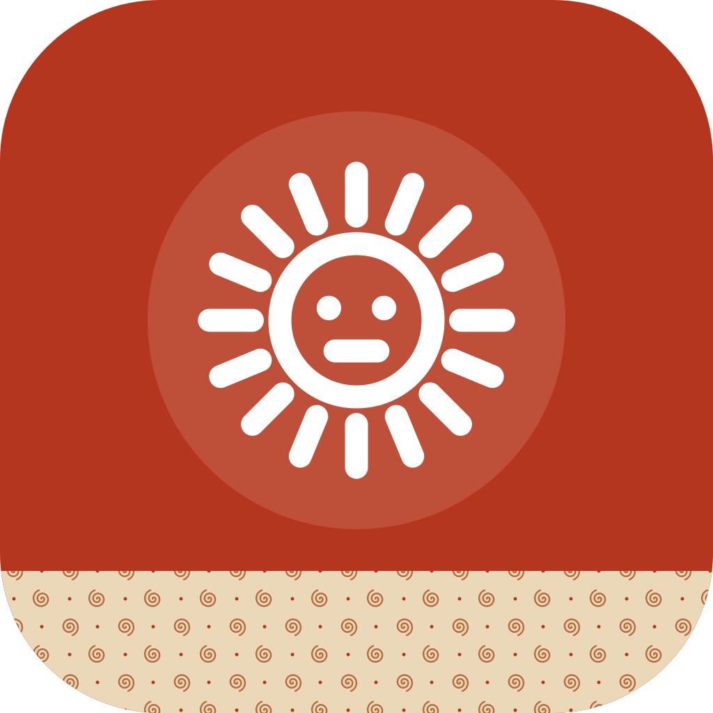
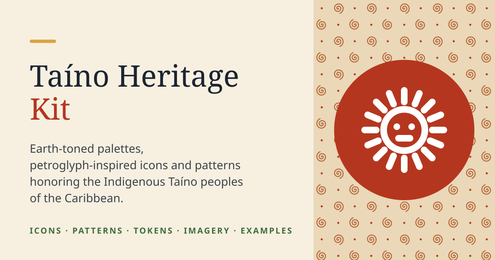
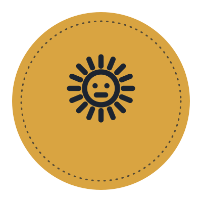
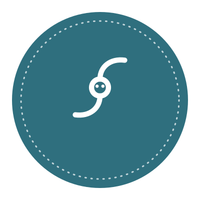
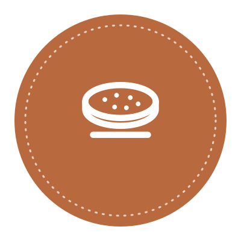
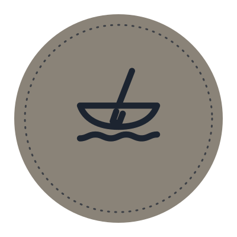

Open-source design kit · CC BY 4.0
Taíno Heritage Kit
Earth-toned palettes, petroglyph-inspired icons and patterns honoring the Indigenous Taíno peoples of the Caribbean.
31icons
5patterns
9colors
3illustrations
3example builds
Earth-toned palettes, petroglyph-inspired icons and patterns honoring the Indigenous Taíno peoples of the Caribbean.
Click a swatch to copy its hex value.
A learning space for the Taíno heritage of the Caribbean: the language in our everyday words, the farming wisdom of the conuco, and communities keeping it alive today.
ABCDEFGHIJKLMNOPQRSTUVWXYZ · abcdefghijklmnopqrstuvwxyz · 0123456789 · áéíóúñü ¿¡
Click an icon to copy its SVG markup.













| Sample | Pairing | Contrast | Grade |
|---|---|---|---|
| Aa | Body text on surface | 13.77:1 | AAA |
| Aa | Text on primary | 5.98:1 | AA |
| Aa | Text on secondary | 6.22:1 | AA |
| Aa | Text on accent | 6.94:1 | AA |
| Aa | Text on surface-alt | 11.17:1 | AAA |
Decorative icons use aria-hidden="true"; pass a title for meaningful icons. Never rely on color alone to convey meaning.
The Taíno were the Indigenous peoples of the Greater Antilles and the Bahamas, including Borikén (Puerto Rico), Kiskeya/Ayiti (Hispaniola), Cuba and Xaymaca (Jamaica). The Taíno did not disappear. Their descendants and revitalization communities are active today, and Taíno words, foods and DNA live on across the Caribbean and its diaspora.
Learn more: Smithsonian NMAI — 'Taíno: Native Heritage and Identity in the Caribbean' · Centro Ceremonial Indígena de Caguana, Utuado, PR · United Confederation of Taíno People (UCTP) · Higuayagua Taíno of the Caribbean